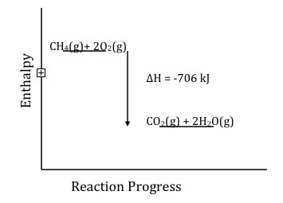

| Chapter 7.6: Energy changes and reactions |
All chemical reactions are accompanied by energy changes. Under most circumstances (particularly when the pressure and volume are kept constant) these changes can be ascribed to changes in enthalpy ΔH. For example combustion reactions (redox reactions involving oxygen) are a major source of energy for most organisms. In warm blooded organisms, the energy released through such reactions is used, in part, to maintain a set body temperature. Within organisms, combustion reactions occur as highly controlled steps (which is why you do not burst into flames), through the process known as respiration. As we will see later, this energy is harnessed by releasing it during the course of a cascade of coupled reactions, rather than all at once. |
7.1 Reactions |
Not all biological forms of respiration use molecular
oxygen, there are other molecules that serve to accept electrons
- this process is known as anaerobic (air-free) respiration. That
said, all known organisms use the molecule adenosine triphosphate
(ATP) as a convenient place to store energy; ATP is synthesized from
adenosine diphosphate (ADP) and inorganic phosphate. As two separate
species ADP and inorganic phosphate are more stable than ATP, and
the energy captured from the environment to make ATP can be released
again (with the formation of ADP and inorganic phosphate). The defining trait of a chemical reaction is a change in the chemical identity of the reactants, new types of molecules are produced. For this to be true, at least some of the bonds in the starting material must be broken, and new bonds must be formed in the products (otherwise no reaction would have occurred). So to analyze energy changes in chemical reactions we look at which bonds get broken and which are formed, and compare their energies. As we will discuss later, the process is not quite so simple, since the pathway by which reaction occurs may involve higher energy intermediates. It is the pathway of a reaction that determines its rate (how fast it occurs), while the difference between products and reactions determined the extent to which the reaction will occur. However, to a good approximation, the approach we are going to look at to estimate energy changes during a reaction gives us a reasonable answer. In the course of this reaction, four C-H bonds will be broken [4 x C–H (436kJ/mol)] and 2 x O=O (498 kJ/mol), while the new bonds formed are 2 x C=O (803 kJ/mol) and 4 x O–H (460 kJ/mol). If you do the math you find that the bond energies of all the bonds broken is 2740 kJ, while the sum of the bond energies formed is –3330 kJ. That is the bonds in the products are 706 kJ more stable than the bonds in the reactants. This may be easier to see if we plot the enthalpy vs reaction progress, it becomes more obvious that the products are lower in energy (more stable). |
| There are several important aspects to note about this analysis. 1. This is only an estimation of the enthalpy change, since the bond energies are measured in the gas phase and are averages. In the real world most reactions don’t occur in the gas phase. In solutions there are all kinds of other interactions (intermolecular forces) that can affect the enthalpy change, but for an initial approximation this method often gives surprisingly good results. |
 |
| 2. Remember, every reaction must be treated as a system. That is both the reactants and products have to be included in any analysis, and the direction of energy transfer between the reaction system and the surroundings. 3. An exothermic reaction occurs when the bonds formed are stronger than the bonds that are broken, and if we look closely at this calculation we can see a major reason why combustion reactions are so exothermic is that they produce carbon dioxide. The bond energy of the carbon-oxygen double bond is very high (although not two times the C–O single bond – can you think why?). The production of CO2 is very favorable from an energy standpoint, it sits in a deep energy well because it has such strong bonds. This point has important ramifications for the world we live in. Carbon dioxide is quite stable (it can be made to react as we will see, but such reactions require the input of energy). |
There are large numbers of us expelling CO2 into the atmosphere (from burning fossil fuels – and breathing!), at a higher rate than it it is currently being removed (through various types of sequestration, chemical reactions and photosynthesis ). You have almost certainly heard of the greenhouse effect, caused by the build up of CO2. One of the reasons why CO2 is difficult to get rid of is that it is stable because it has strong bonds. [Given the notoriety of CO2 in terms of climate change, we will come back to this topic in (yet to be written) chapter 10).] |
7.1
Reactions |
Question to answer:
|
| 28-Jun-2012 |